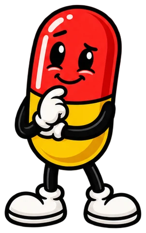

No. 1
A traditional rug that is slowly melting.
Label
- Dosage
- Place in entryway.
- Side effects
- Guests double-check their vision.
- Good for
- Good for the person with a perfect home. A traditional rug that looks like it is slowly melting.

Gift guide · 37 picks · Updated October 2026
Rx: For the person who already owns one of everything
Some people have everything, except a rug that looks like it's melting into the floor. When normal gifts won't land, go so weird they couldn't possibly have bought it for themselves. Every pick here is a conversation starter that still does a real job, like holding flowers, lighting a room or catching a nap.
Links go to Amazon. If you buy something, I earn a small commission at no extra cost to you. Prices change often, so check Amazon for the current price.
A traditional rug that is slowly melting.
A pink ceramic raw chicken that holds your flowers. You're welcome.
A duck lamp that lays a glowing egg.
A bunch of bananas you can nap on.
A disco ball that partied too hard.
Time is melting. So is the clock.
A fluffy yellow runner that looks like a stick of butter.
Flowers, but make it ballpark.
A bouquet of gloriously ugly monsters.
A skeleton holds a lamp over your candle and melts it from the top. No flame, all drama.
A squishy silicone frog night light with very big, very concerned eyes.
A goldfish wearing a shark fin. Confidence level: shark.
A ceramic vase styled like a vintage cigarette pack, now full of flowers instead.
Two fried eggs for your bathroom floor.
Your toilet paper, wearing a pearl necklace.
Three little sheep that turn your toilet paper into a flock.
A 35-inch goose who just wants to cuddle.
A huge slice of buttered toast you can lie on. Carbs, but cozy.
Fresh flowers in a giant pill.
A modern cuckoo clock whose little bird still pops out every hour.
Paint with water and watch it fade away. Art therapy with no mess.
A bath bomb shaped like a toaster. Extremely dark humor, extremely safe bath.
A mythical beast with a very normal job.
Your lunch, transported with urgency.
A fortune-telling pickle with 100 answers. Press and receive wisdom.
A shaggy rug made to look like mossy hills around a little blue pond.
Van Gogh's Starry Night as a LEGO build, with a little Vincent painting in the corner.
A bronze-look T. rex statue that is mid-snack on a garden gnome.
Six paint-by-numbers kits of dogs in sunglasses and headscarves. Paint the fanciest dogs you know.
A set of soft, chunky pigeon plushies. City birds, but cuddly.
Two crinkly plush newspapers from The Canine Post, featuring the scoop on postal worker escape routes. Finally, a paper your dog can fetch and actually read.
A little blue bird in a gold cage that chirps, sings and bobs around whenever it hears you. All the birdsong, none of the birdseed.
Ten coasters printed with cross-section slices of a human brain. Stack them up and you get the whole brain back.
A palm-sized record player that actually spins and plays real music from teeny tiny vinyl. Completely pointless and completely delightful.
A stainless steel pendant shaped like the dopamine molecule. Wear your favorite chemical.
A glass cloud filled with liquid that grows crystals depending on the weather outside. A 19th-century storm glass, but cute.
A big, huggable plush of a real anatomical heart, with little blood cell buddies tucked in a zip pocket. Gives you all of it.
Answer 4 quick questions. Get 3 picks for your very specific person.
Start my prescriptionFor the one who gets the joke.
Open the guide 33 picksCheerful, cozy and actually useful.
Open the guide 32 picksDesk toys, kitchen gear and a goose.
Open the guide 44 picksFor the eight hours you spend there.
Open the guide 14 picksTiny friends who live in your mug.
Open the guide